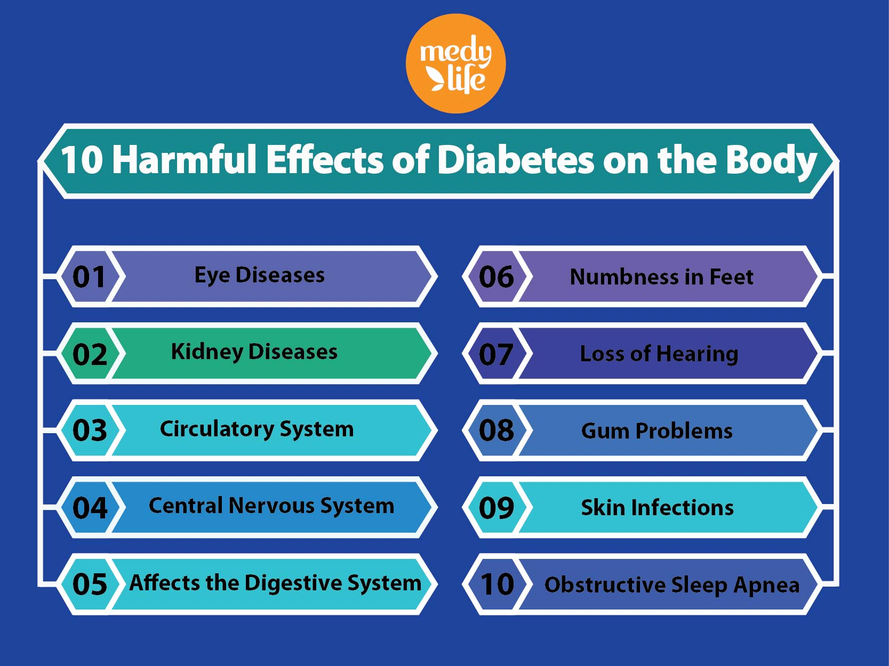

DANGEROUS OF
DIABETES
Long-term complications of diabetes develop gradually. The longer you have diabetes — and the less controlled your blood sugar — the higher the risk of complications. Eventually, diabetes complications may be disabling or even life-threatening. Their impact is:
Diabetes dramatically increases the risk of various cardiovascular problems, including coronary artery disease with chest pain (angina), heart attack, stroke and narrowing of arteries (atherosclerosis). If you have diabetes, you're more likely to have heart disease or stroke. Nerve damage (neuropathy).
HOW TO
CURE
DIABETES
Although there is no complete cure or medication for diabetes, it can be alleviated and treated and controlled through medication and controlled diet. Some people will go into remission in the process, thus reducing the suffering caused by diabetes.

USEFUL
WEBSITE
General Information about diabetes
For Parents and Carers
Diabetes Education for Health Professionals
Resources for Health Professionals
Health Information
Diabetes research
Healthy eating, GI, food and nutrition